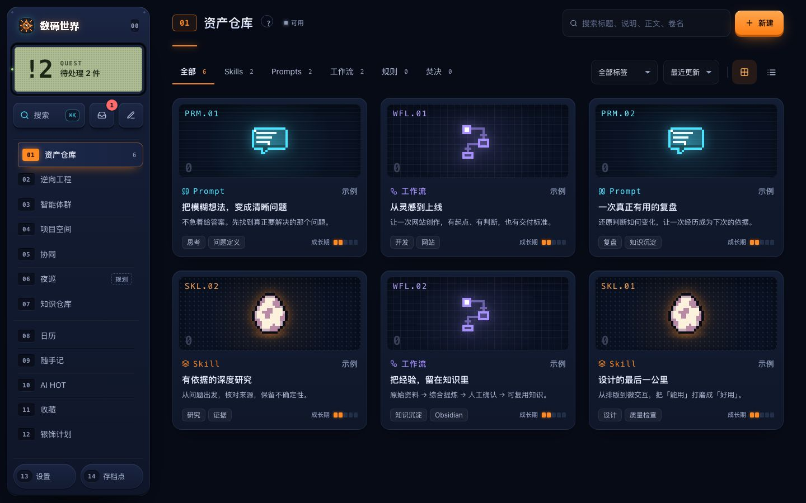
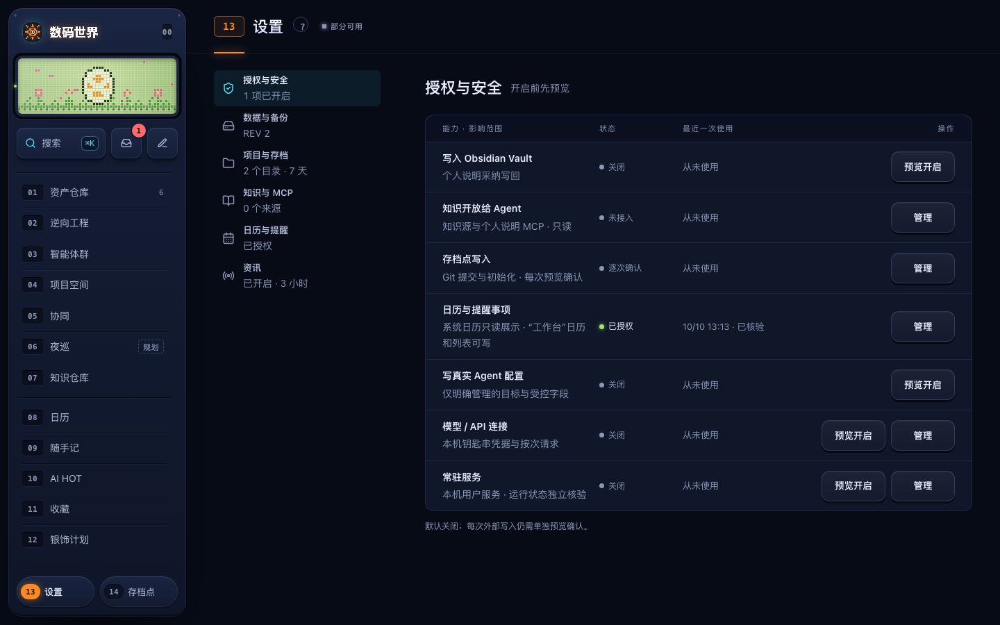
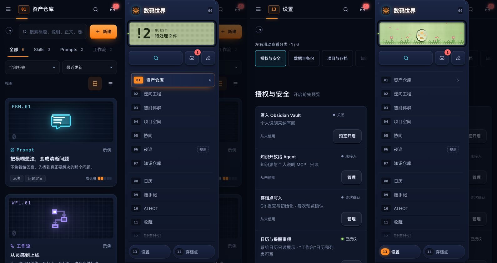

按你的四个选择，在真实页面上做出了 v17 外壳，并用资产仓库（展示页）和设置（工具页）各做一个样板。数据都是测试用的合成数据。切换下方的“改版前 / 改版后”可以直接对比。
第一排卡片从 y=363 提到 y=176，首屏多出约 200px。热度为 0 的数字退后，只有真实用过的数字才是橙色。

标签条一行；左侧分类和右侧标题顶对齐；表格行高 78 → 68，操作列定宽右对齐，按钮同宽；“最近一次使用”不再折行。

从上到下，每个部件都有自己的含义。
顶栏本身就是标签条（菜单、编号、标题、搜索、待处理）；机身从左侧滑出，结构和桌面一致。从左到右：资产仓库、资产仓库抽屉、设置、设置抽屉。

| 类别 | 规定 |
|---|---|
| 字阶 5 档 | 11 标签 / 14 正文 / 17 小标题 / 22 区块与标签条标题 / 40 展示页特大号；禁止 11px 以下 |
| 节奏 3 值 | 元素之间 12、区块内 24、区块之间 64 |
| 圆角 3 档 | 6 小件 / 12 卡片与面板 / 20 机身与大容器 |
| 材质 3 种 | 机身（只给外壳）、屏幕（数据对象本身）、面板（一页最多 1–2 块），其余直接放在底色上 |
| 颜色 | 橙色只表示主操作和“需要你”；青色只表示选中、焦点、链接；伙伴色只出现在伙伴身上；红黄绿只表示状态 |
| 英文 | 只用于编号与类型码、状态、真实数据；区块标题只写中文 |
| 状态组件 | 降级行（一句人话加重试，同一来源只提示一次）、空位（高度跟随内容，引导语只写一次）、零值退后、截断渐隐 |
确认后，我写系统层派单交给 Codex，顺序是：外壳 → 页头 → 令牌 → 状态组件 → 两个样板页，最后全量回归，并交回 1440 / 390 叠图。其余页面之后逐页走“简报 → 视觉稿 → 代码”。